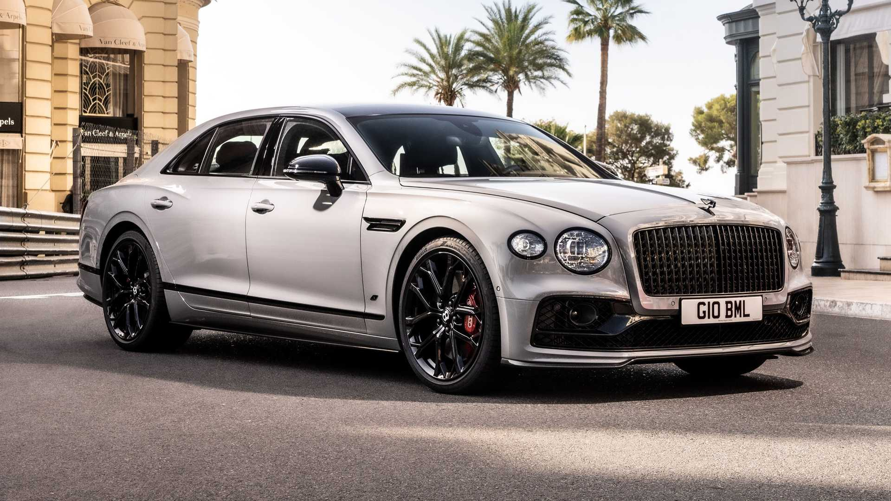
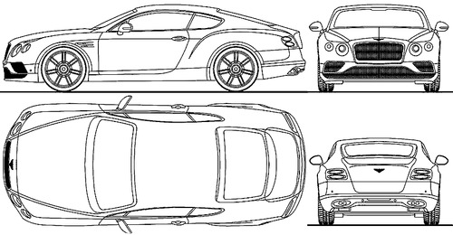
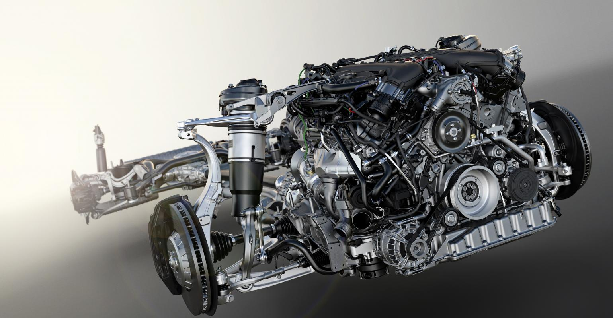
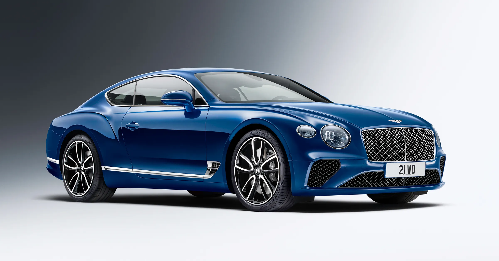

In terms of design, the Bentley car comes with a wonderful design, as the seats are designed in an elegant and beautiful way from the inside, and the exterior is very attractive, with its luxurious design, making it distinct from other cars. It has a large screen inside the car. It has front and rear air conditioning and ventilation holes in a classic circular design. The presence of a sports wing behind the car in a more than wonderful shape and design and with sporty designs, as this addition, although it is simple, gives it an extra elegance. The opening and closing period of the car roof is only ten seconds.: Good control of the movement of the car for drivers thanks to the presence of the automatic control feature for cars This makes driving easy and simple to a large extent and makes it comfortable.
Bentley Continental GT cars come with two types of engines, a 4.0-liter twin-turbo 8-cylinder engine with an 8-speed automatic transmission, the luxury car accelerates from 0 to 100 km / h in 4.0 seconds, while its top speed is 318 km / h, and a W12 engine capacity 6 liters, the car accelerates from 0 to 100 km / h in 3.7 seconds, and the top speed is 333 km / h.
Equip the panoramic glass roof with polarized glass that reduces glare; Giving occupants a clearer view of their surroundings, in addition to an electronically operated interior curtain, the glass roof is now available on all cars
